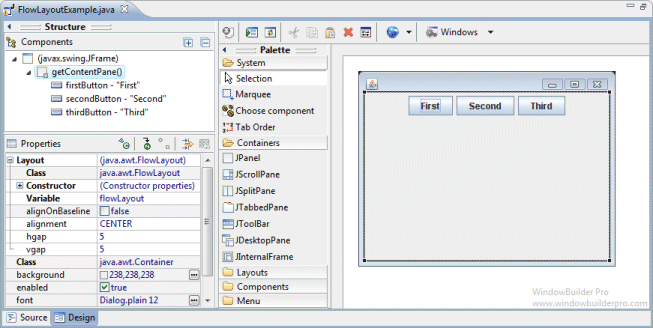
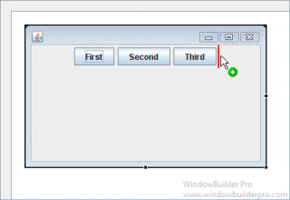
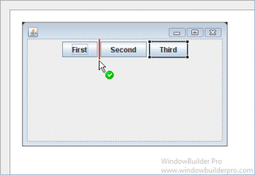
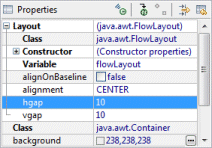
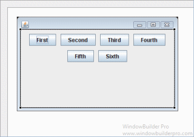
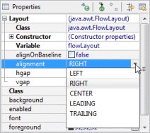
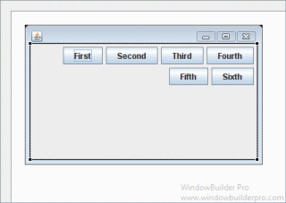
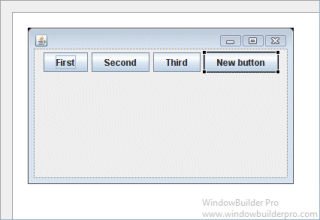
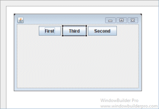

A FlowLayout arranges components in a directional flow, much
like lines of text in a paragraph. FlowLayouts are typically used
to arrange buttons in a panel. It arranges buttons horizontally until no
more buttons fit on the same line. The line alignment is determined by
the align property.
Main Features
- Select FlowLayout from the Layouts palette and
drop it on a JFrame or JPanel

- Graphical feedback is provided for all drop and move
interactions


- Horizontal and vertical gaps can be specified using the
Property Pane




Graphical Feedback
- When moving a widget or adding a new widget, the current drop
point is highlighted in red


|